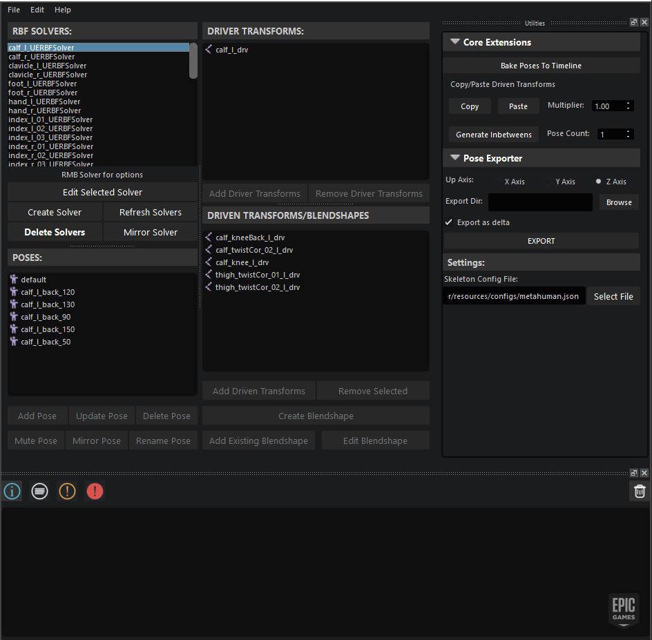

Pose Driver Connect Documentation#
Contents:
Overview#
{kind=link}
Pose Wrangler is the Maya portion of Pose Driver Connect, a pipeline for creating RBF data for Pose Driver nodes in Unreal leveraging the MayaUERBFPlugin.
Stay Up To Date#
Updates to this tool can be found via the Unreal Marketplace here: https://www.unrealengine.com/marketplace/en-US/product/pose-driver-connect.
Further Learning#
For an in depth breakdown of the RBF solver and it’s settings, check out the official tutorial on the Epic Developer Community here: https://dev.epicgames.com/community/learning/tutorials/r04p/unreal-engine-authoring-secondary-animation-in-maya-and-unreal-with-pose-driver-connect
Release History#
2.3.0:#
Maya 2020-2024 Support
- New skeleton config file:
Replaces the existing mirror mapping file, encompassing that data and enabling additional skeleton related data to be stored and customized.
New retargeting feature to support driver/bind skeleton setups.
- New serialization interface
New serializers can be made as the tool matures, ensuring backwards compatibility and upgrade steps for previous versions
All current saved files prior to this update will use the 1.0.0 serializer and automatically be upgraded to 1.1.0 upon next save.
1.1.0 introduces a new metadata field and stores the solver data under a new solvers field
- New Pose Exporter:
Pose Wrangler now ships with the Pose Exporter extension, a simple to use interface that handles the exporting of poses and solver data into a format that the Unreal Pose Driver Connect plugin can interpret.
Pose Wrangler must be on your PYTHONPATH in order for the exporter to work, otherwise the export will fail with the exporter unable to find epic_pose_wrangler
Pose Exporter exports out each solver’s poses as an FBX animation sequence, that Pose Driver Connect in Unreal can use to generate AnimSequences and PoseAssets.
2.0.0:#
Supports scenes created with the UERBFSolverNode
Multiple Driver Support
Initial blendshape support (WIP)
Supports Maya 2018-2022
Support for custom mirror mappings to allow for rigs with naming conventions that deviate from the default UE5 conventions
Fully automatable via Python and MayaPy
Serialization/deserialization to dictionary or JSON file
Support for custom extensions and context menu actions
1.0.0:#
Supports legacy scenes created with the UE4RBFSolverNode
Supports Maya 2018-2022
Provides upgrade workflow to migrate to V2
Contributors#
Chris Theodosius
Chris Evans
Judd Simantov
David Corral
Borna Berc